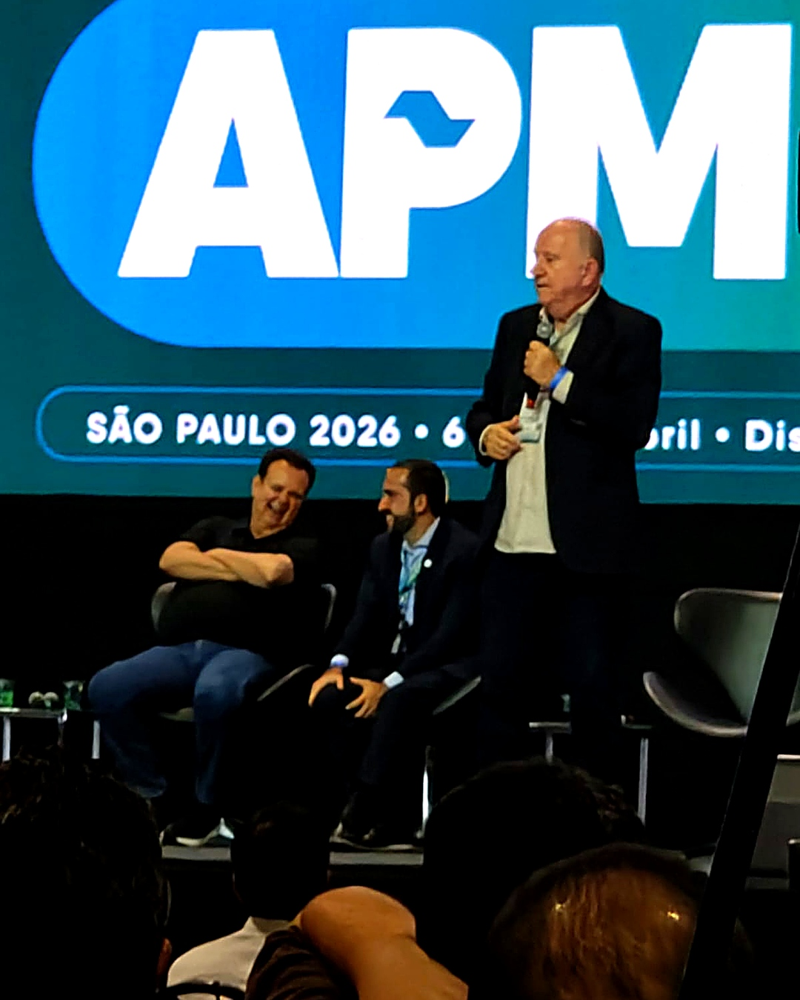
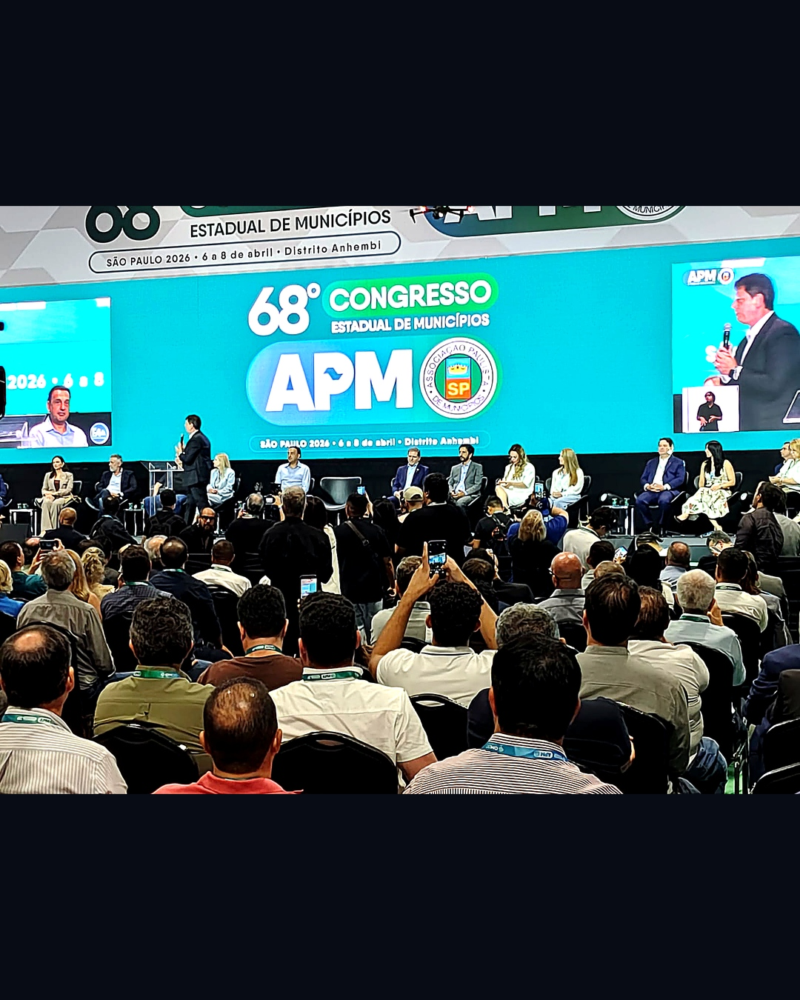
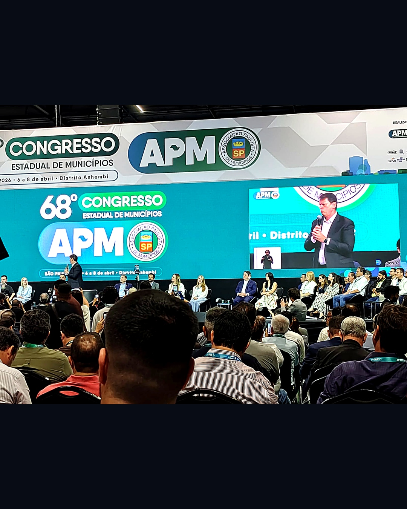
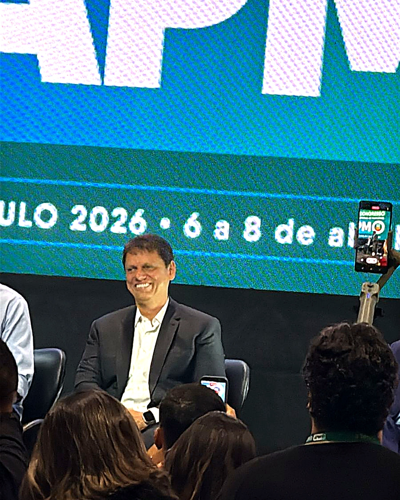

E
Excelência
Cada projeto busca o padrão que transcende o ordinário. O impacto real do conhecimento.
Pesquisa, desenvolvimento e inovação em IA aplicada à educação pública brasileira — gerando impacto mensurável na qualidade de ensino e na equidade de oportunidades.
O framework E·I·M·C é a bússola do Instituto i10 — da concepção de pesquisa à entrega em sala de aula.
Cada projeto busca o padrão que transcende o ordinário. O impacto real do conhecimento.
Tecnologia a serviço da educação pública. IA é ferramenta, não fim em si mesma.
Compromisso com resultados documentados, metodologias validadas e transparência algorítmica.
Articulação entre setor público, acadêmico e privado para transformação em escala.
Nenhum dos dois avança sem o outro. Toda tecnologia que desenvolvemos conecta os dois lados.
Professores, coordenadores pedagógicos, direção escolar e secretarias. Transferimos capacidade institucional permanente — formação continuada, trilhas de letramento em IA e ferramentas que apoiam (nunca substituem) o julgamento docente.

Estudantes da rede pública brasileira. Construímos tutoria adaptativa, avaliação diagnóstica e trilhas personalizadas — sempre medidas por grupo-controle e auditáveis pela escola e pela família.
Sala de aula, infográficos de pesquisa e registro de evento — artefatos que documentam a operação do Instituto i10.



Estudantes de escolas públicas que utilizaram nosso sistema de tutoria adaptativa alcançaram uma melhoria substancial de eficiência no aprendizado de matemática — em comparação com métodos tradicionais.
O i10 não chegou com uma plataforma para vender. Chegou com uma metodologia para ensinar — nossos professores construíram junto, e o que sobrou é nosso.
Pela primeira vez vi uma ferramenta de IA que respeita o tempo do estudante — e o tempo do professor. Os dados ajudam a decidir, não substituem o olhar de quem ensina.
O diagnóstico FUNDEB do i10 mostrou onde podíamos captar mais recurso — com transparência que cabe na audiência pública e respeito ao conselho de acompanhamento.
Não acreditamos em tecnologia pela tecnologia. Cada inovação percorre um caminho disciplinado — da evidência científica à escala pública.

Revisão sistemática, pré-registro de hipóteses, parceria com universidades brasileiras e internacionais, e estudos longitudinais com grupo-controle.

Co-design com professores, medição de aprendizagem semana a semana, e iteração rápida do produto baseada em resultado real de sala de aula — não em opinião.

Transferência de capacidade institucional permanente para redes estaduais e municipais — metodologia aberta, formação docente e monitoramento público dos resultados.
Desenvolvemos soluções abertas, validadas cientificamente e acessíveis para as escolas públicas brasileiras.
Estudos longitudinais com metodologia rigorosa e publicações revisadas por pares.
Plataformas que se ajustam ao ritmo e ao estilo de aprendizagem de cada estudante.
Capacitação contínua para que educadores dominem e orquestrem a IA em sala.
Implementação conjunta com secretarias estaduais e municipais de educação.
Medimos cada intervenção. Publicamos dados. Defendemos transparência algorítmica.
Código, metodologias e estudos disponíveis para professores, pesquisadores e gestores.
Dados analisados pelo Instituto i10 a partir de fontes públicas do FNDE. Cada linha abaixo é uma oportunidade concreta para redes municipais ampliarem seus recursos via FUNDEB.
| Estado | Potencial | Ganho % | Municípios |
|---|---|---|---|
| SP | R$ 13,5 bi | +40,5% | 645 |
| MG | R$ 6,7 bi | +43,7% | 853 |
| BA | R$ 6,5 bi | +32,1% | 417 |
| RJ | R$ 6,0 bi | +51,0% | 92 |
| PA | R$ 4,4 bi | +36,0% | 144 |
| PE | R$ 3,8 bi | +41,0% | 184 |
| RS | R$ 3,7 bi | +35,4% | 497 |
| PR | R$ 3,6 bi | +39,4% | 399 |
| CE | R$ 3,4 bi | +27,1% | 184 |
| MA | R$ 3,1 bi | +25,5% | 217 |
| SC | R$ 3,1 bi | +36,5% | 295 |
| GO | R$ 2,4 bi | +48,6% | 246 |
Fonte: FUNDEB Hub · Instituto i10 — análise sobre dados públicos do FNDE.
Educação pública exige padrões mais altos — não mais baixos. Três compromissos orientam cada modelo, cada dataset e cada interação do Instituto i10 com estudantes brasileiros.
Modelos auditáveis, decisões explicáveis e relatórios públicos de viés. Nenhum estudante deveria ser avaliado por uma caixa-preta.
Datasets representativos da diversidade brasileira, avaliação contínua de disparidades e calibração para reduzir — não amplificar — desigualdades históricas.
IA apoia professores; nunca os substitui. Toda decisão pedagógica importante passa por julgamento docente — o algoritmo sugere, o educador decide.
Nossa tecnologia não substitui o humano. Ela o liberta das amarras burocráticas.
Dados anonimizados, código-fonte, metodologias e resultados negativos — tudo publicado aberto. Porque resultado reprodutível é o único resultado confiável.
Esta landing page é um recorte. No portal completo você encontra nossa história, equipe, relatórios anuais, biblioteca de estudos, vagas e editais abertos — todo o trabalho do Instituto i10 em um só lugar.